Contents
- 4.1 Generating the Bell Envelopes
- 4.2 Parameters for the Bell
- 4.3 The Bell Sound
- Case 1 - fc=110 Hz; fm=220 Hz; I0=10; tau=2sec; dur=6sec; fs=11025;
- a) Listen to sound by playing it with the soundsc function
- b) Calculate the fundamental frequency of the "note" being played.
- c) Describe how you can hear the frequency content changing according to I(t)
- d) Display a spectrogram of the signal
- e) Plot the entire signal and compare it to the envelope A(t) generated by bellenv
- f) Plot about 100–200 samples from the middle of the signal and explain what you see, especially the frequency variation.
- Case 2 - fc=220 Hz; fm=440 Hz; I0=5; tau=2sec; dur=6sec; fs=11025;
- a) Listen to sound by playing it with the soundsc function
- b) Calculate the fundamental frequency of the "note" being played.
- c) Describe how you can hear the frequency content changing according to I(t)
- d) Display a spectrogram of the signal
- e) Plot the entire signal and compare it to the envelope A(t) generated by bellenv
- f) Plot about 100–200 samples from the middle of the signal and explain what you see, especially the frequency variation.
- Case 3 - fc=110 Hz; fm=220 Hz; I0=10; tau=12sec; dur=3sec; fs=11025;
- a) Listen to sound by playing it with the soundsc function
- b) Calculate the fundamental frequency of the "note" being played.
- c) Describe how you can hear the frequency content changing according to I(t)
- d) Display a spectrogram of the signal
- e) Plot the entire signal and compare it to the envelope A(t) generated by bellenv
- f) Plot about 100–200 samples from the middle of the signal and explain what you see, especially the frequency variation.
- Case 4 - fc=110 Hz; fm=220 Hz; I0=10; tau=.3sec; dur=3sec; fs=11025;
- a) Listen to sound by playing it with the soundsc function
- b) Calculate the fundamental frequency of the "note" being played.
- c) Describe how you can hear the frequency content changing according to I(t)
- d) Display a spectrogram of the signal
- e) Plot the entire signal and compare it to the envelope A(t) generated by bellenv
- f) Plot about 100–200 samples from the middle of the signal and explain what you see, especially the frequency variation.
- Case 5 - fc=250 Hz; fm=350 Hz; I0=5; tau=2sec; dur=5sec; fs=11025;
- a) Listen to sound by playing it with the soundsc function
- b) Calculate the fundamental frequency of the "note" being played.
- c) Describe how you can hear the frequency content changing according to I(t)
- d) Display a spectrogram of the signal
- e) Plot the entire signal and compare it to the envelope A(t) generated by bellenv
- f) Plot about 100–200 samples from the middle of the signal and explain what you see, especially the frequency variation.
- Case 6 - fc=250 Hz; fm=350 Hz; I0=3; tau=1sec; dur=5sec; fs=11025;
- a) Listen to sound by playing it with the soundsc function
- b) Calculate the fundamental frequency of the "note" being played.
- c) Describe how you can hear the frequency content changing according to I(t)
- d) Display a spectrogram of the signal
- e) Plot the entire signal and compare it to the envelope A(t) generated by bellenv
- f) Plot about 100–200 samples from the middle of the signal and explain what you see, especially the frequency variation.
- 4.4 Modifying the Fundamental Frequency
- Test 1: Fc = 50 and Fm = 100 => F0 ~ 50
- Test 2: fc = 200 fm = 400 => F0 ~ 200
- Test 3: fc = 400 fm = 800 => F0 ~ 400
- Test 4: fc = 800 fm = 1600 => F0 ~ 800
- Frequency Modulation Ratio Tests
- Test 1: 5:7 Ratio (f0 = 40)
- Test 2: 7:5 Ratio (f0 = 40)
- Test 3: 1:6
- Test 4: 7:11 Ratio
- Which parameters sound best?
4.1 Generating the Bell Envelopes
%See bellenv.m for details on function construction
4.2 Parameters for the Bell
%See bell.m for details on how the bell sound function is constructed
4.3 The Bell Sound
Case 1 - fc=110 Hz; fm=220 Hz; I0=10; tau=2sec; dur=6sec; fs=11025;
a) Listen to sound by playing it with the soundsc function
%run bell function and create array of values % ff = frequency vector (containing fc and fm) ff1 = [110,220]; % Io = scale factor for modulation index Io1 = 10; % tau = decay parameter for A(t) and I(t) tau1 = 2; % dur = duration (in sec.) of the output signal dur1 = 6; % fsamp = sampling rate fsamp1 = 11025; y1 = bell(ff1,Io1,tau1,dur1,fsamp1); %play the sound (array and sampling rate) soundsc(y1, fsamp1);
b) Calculate the fundamental frequency of the "note" being played.
% The fundamental frequency is calculated by finding the fourier transform % or FFT of the bell sound and finding the frequency value with the first % promiment peak. Any peaks that occur above this frequency are simply % harmonics. % (https://www.mathworks.com/help/matlab/math/fourier-transforms.html) m1 = length(y1); n1 = pow2(nextpow2(m1)); y1fft = fft(y1, n1); f1 = (0:n1)*fsamp1/n1; power1 = abs(y1fft).^2/n1; %figure(); %plot(f1(1:floor(n1/2)),power1(1:floor(n1/2))); peaks1 = islocalmax(power1, 'MinProminence', 1); f01 = 0; for i = 1:length(peaks1) if(peaks1(i) == 1) f01 = i*fsamp1/n1; break; else continue; end end %%Explain how you can verify by listening that you have the correct fundamental frequency. % Just by listening, we can verify that we have the correct fundamental % frequency by varying the carrier and modulating function parameters to get higher % and lower toned sounds and see if our fundamental frequency calcuation is % also going up and down with the tone changes. We can also compare the sound of our created % note with the sound of the calculated natural freqeuncy using an online tone generator.
c) Describe how you can hear the frequency content changing according to I(t)
The frequency content is most modified by changing the Io value. Changing tau affects how quickly the sound decays within the duration and the duration obviously affects how long the sound plays in general. The interesting change is with Io where the lower the modulation index is the 'purer' the tone sounds. There are fewer reverberations and overtones/harmonics. The more we raise the Io value the more overtones and harmonics we hear.
%%Plot fi(t) versus t for comparison % fi(t) = fc - I(t)*fm*sin(2pi*fm*t+phi_m) + dI/dt*cos(2*pi*fm*t+phi_m) % (dI/dt = -1/tau * I0 * exp(-t/tau) %defining terms Psi_m1 = -pi/2; Psi_c1 = -pi/2; t1 = 0:1/fsamp1:dur1; I_t1 = Io1 * bellenv(tau1, dur1, fsamp1); %call bell envelope function (exponential decay) %calcualting fi_t fi_t1 = ff1(1,1) - I_t1.*ff1(1,2).*cos(2*pi*ff1(1,1)*t1+Io1*I_t1*-1/tau1.*cos(2*pi*ff1(1,2)*t1+Psi_m1)+Psi_c1); %All 6 cases will have their fi(t) plots plotted together on the same plot %for comparison sake %plotting normalized I(t) and fi(t) figure(2); subplot(3,2,1) plot(t1, fi_t1/max(fi_t1), '-b'); hold on; plot(t1, I_t1/max(I_t1), '-r'); hold off; title('Case 1 fi(t) vs. t'); figure(); plot(t1, fi_t1/max(fi_t1), '-b'); hold on; plot(t1, I_t1/max(I_t1), '-r'); hold off; title('Case 1 fi(t) vs. t');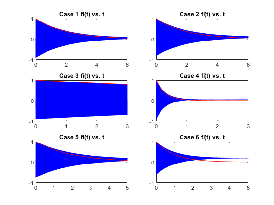 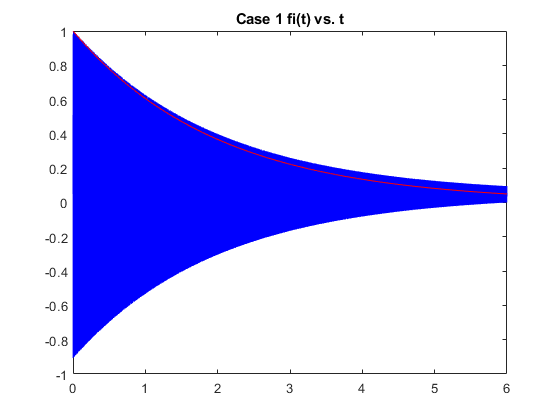
d) Display a spectrogram of the signal
figure(); plotspec(y1, fsamp1, 256); title('Case 1 Spectrogram'); %%Describe how the frequency content changes, and how that change is related to I(t) % The frequency content changes with I(t) by showing how long the harmonics % and overtones last. We can see that the faster the decay rate or the % larger tau is the sooner the frequency spectrum begins to have a % diminshed influence from higher frequency aspects of the signal. Io also % affects the plot by adding in higher frequency spectral lines. The % higher the Io value the more harmonics or spectral lines we see on the graph. %%Point out the "harmonic" structure of the spectrogram, and calculate the fundamental frequency, f0 % The fundamental frequency has been calculated at this point and the % spectrogram shows that the fundamental frequency value is the one that % has the strongest presence in the spectrogram at the end of the duration % of the signal. The harmonic structure is seen with the spectral lines that % show how at the beginning of the noise a large number of frequencies % contribute to the sound but by the end of the sound we are left with the % fundamental frequency and maybe the first or second harmonic. %Case 1 fundamental frequency calculation result f01
f01 = 109.6848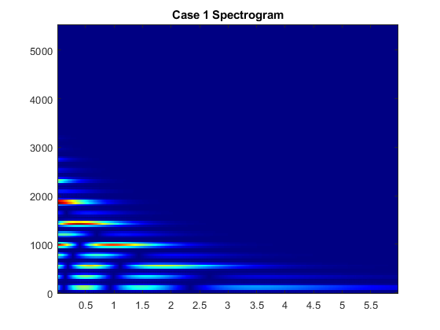
e) Plot the entire signal and compare it to the envelope A(t) generated by bellenv
%recalculating A(t) A_t1 = bellenv(tau1, dur1, fsamp1); %plot the signal figure(); plot(y1); set(gca,'FontSize',14); %set font size title('Case 1 Signal and A(t)','FontSize',14); %Title subtitle('Signal = blue line A(t) = red line'); xlabel('Time', 'FontSize',14);% X-axis Label ylabel('Amplitude', 'FontSize',14);% Y-axis Label drawnow; %ensure drawings are complete hold on; plot(A_t1, '-r', 'LineWidth', 2); hold off;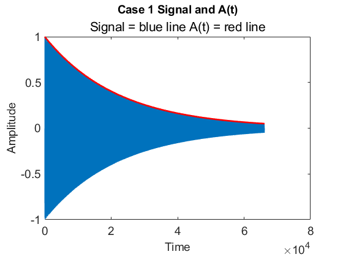
f) Plot about 100–200 samples from the middle of the signal and explain what you see, especially the frequency variation.
figure(); plot(y1(100:1:300)); title('Case 1 200 samples'); % This view of 200 samples shows a pattern with one spaced out peak followed % by three closely spaced peaks. This pattern shows that there are areas % where a lower frequency is predominant and other areas where higher % frequency aspects of the signal are showing up.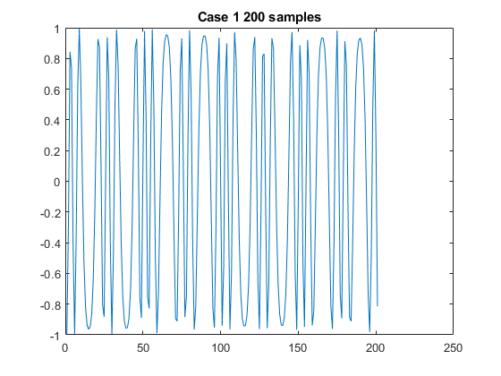
Case 2 - fc=220 Hz; fm=440 Hz; I0=5; tau=2sec; dur=6sec; fs=11025;
a) Listen to sound by playing it with the soundsc function
%run bell function and create array of values % ff = frequency vector (containing fc and fm) ff2 = [220,440]; % Io = scale factor for modulation index Io2 = 5; % tau = decay parameter for A(t) and I(t) tau2 = 2; % dur = duration (in sec.) of the output signal dur2 = 6; % fsamp = sampling rate fsamp2 = 11025; y2 = bell(ff2,Io2,tau2,dur2,fsamp2); %play the sound (array and sampling rate) soundsc(y2, fsamp2);
b) Calculate the fundamental frequency of the "note" being played.
% The fundamental frequency is calculated by finding the fourier transform % or FFT of the bell sound and finding the frequency value with the first % promiment peak. Any peaks that occur above this frequency are simply % harmonics. % (https://www.mathworks.com/help/matlab/math/fourier-transforms.html) m2 = length(y2); n2 = pow2(nextpow2(m2)); y2fft = fft(y2, n2); f2 = (0:n2)*fsamp2/n2; power2 = abs(y2fft).^2/n2; %figure(); %plot(f2(1:floor(n2/2)),power2(1:floor(n2/2))); peaks2 = islocalmax(power2, 'MinProminence', 1); f02 = 0; for i = 1:length(peaks2) if(peaks2(i) == 1) f02 = i*fsamp2/n2; break; else continue; end end %%Explain how you can verify by listening that you have the correct fundamental frequency. % Just by listening, we can verify that we have the correct fundamental % frequency by varying the carrier and modulating function parameters to get higher % and lower toned sounds and see if our fundamental frequency calcuation is % also going up and down with the tone changes. We can also compare the sound of our created % note with the sound of the calculated natural freqeuncy using an online tone generator.
c) Describe how you can hear the frequency content changing according to I(t)
The frequency content is most modified by changing the Io value. Changing tau affects how quickly the sound decays within the duration and the duration obviously affects how long the sound plays in general. The interesting change is with Io where the lower the modulation index is the 'purer' the tone sounds. There are fewer reverberations and overtones/harmonics. The more we raise the Io value the more overtones and harmonics we hear.
%%Plot fi(t) versus t for comparison % fi(t) = fc - I(t)*fm*sin(2pi*fm*t+phi_m) + dI/dt*cos(2*pi*fm*t+phi_m) % (dI/dt = -1/tau * I0 * exp(-t/tau) %defining terms Psi_m2 = -pi/2; Psi_c2 = -pi/2; t2 = 0:1/fsamp1:dur1; I_t2 = Io2 * bellenv(tau2, dur2, fsamp2); %call bell envelope function (exponential decay) %calcualting fi_t fi_t2 = ff2(1,1) - I_t2.*ff2(1,2).*cos(2*pi*ff2(1,1)*t2+Io2*I_t2*-1/tau2.*cos(2*pi*ff2(1,2)*t2+Psi_m2)+Psi_c2); %All 6 cases will have their fi(t) plots plotted together on the same plot %for comparison sake %plotting normalized I(t) and fi(t) figure(2); subplot(3,2,2) plot(t2, fi_t2/max(fi_t2), '-b'); hold on; plot(t2, I_t2/max(I_t2), '-r'); hold off; title('Case 2 fi(t) vs. t');
d) Display a spectrogram of the signal
figure(); plotspec(y2, fsamp2, 256); title('Case 2 Spectrogram'); %%Describe how the frequency content changes, and how that change is related to I(t) % The frequency content changes with I(t) by showing how long the harmonics % and overtones last. We can see that the faster the decay rate or the % larger tau is the sooner the frequency spectrum begins to have a % diminshed influence from higher frequency aspects of the signal. Io also % affects the plot by adding in higher frequency spectral lines. The % higher the Io value the more harmonics or spectral lines we see on the graph. %%Point out the "harmonic" structure of the spectrogram, and calculate the fundamental frequency, f0 % The fundamental frequency has been calculated at this point and the % spectrogram shows that the fundamental frequency value is the one that % has the strongest presence in the spectrogram at the end of the duration % of the signal. The harmonic structure is seen with the spectral lines that % show how at the beginning of the noise a large number of frequencies % contribute to the sound but by the end of the sound we are left with the % fundamental frequency and maybe the first or second harmonic. %Case 2 fundamental frequency calculation result f02
f02 = 219.9583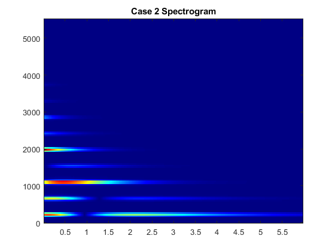
e) Plot the entire signal and compare it to the envelope A(t) generated by bellenv
%recalculating A(t) A_t2 = bellenv(tau2, dur2, fsamp2); %plot the signal figure(); plot(y2); set(gca,'FontSize',14); %set font size title('Case 2 Signal and A(t)','FontSize',14); %Title subtitle('Signal = blue line A(t) = red line'); xlabel('Time', 'FontSize',14);% X-axis Label ylabel('Amplitude', 'FontSize',14);% Y-axis Label drawnow; %ensure drawings are complete hold on; plot(A_t2, '-r', 'LineWidth', 2); hold off;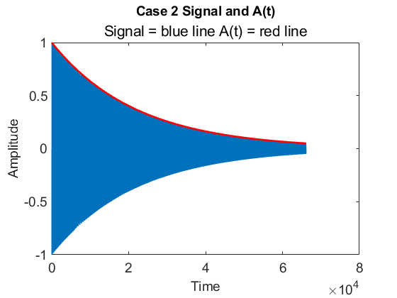
f) Plot about 100–200 samples from the middle of the signal and explain what you see, especially the frequency variation.
figure(); plot(y2(100:1:300)); title('Case 2 200 samples'); % This view of 200 samples shows a pattern with one spaced out peak followed % by three closely spaced peaks. This pattern shows that there are areas % where a lower frequency is predominant and other areas where higher % frequency aspects of the signal are showing up.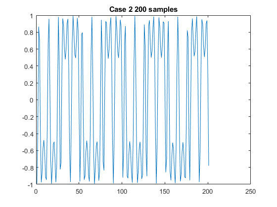
Case 3 - fc=110 Hz; fm=220 Hz; I0=10; tau=12sec; dur=3sec; fs=11025;
a) Listen to sound by playing it with the soundsc function
%run bell function and create array of values % ff = frequency vector (containing fc and fm) ff3 = [110,220]; % Io = scale factor for modulation index Io3 = 10; % tau = decay parameter for A(t) and I(t) tau3 = 12; % dur = duration (in sec.) of the output signal dur3 = 3; % fsamp = sampling rate fsamp3 = 11025; y3 = bell(ff3,Io3,tau3,dur3,fsamp3); %play the sound (array and sampling rate) soundsc(y3, fsamp3);
b) Calculate the fundamental frequency of the "note" being played.
% The fundamental frequency is calculated by finding the fourier transform % or FFT of the bell sound and finding the frequency value with the first % promiment peak. Any peaks that occur above this frequency are simply % harmonics. % (https://www.mathworks.com/help/matlab/math/fourier-transforms.html) m3 = length(y3); n3 = pow2(nextpow2(m3)); y3fft = fft(y3, n3); f3 = (0:n3)*fsamp3/n3; power3 = abs(y3fft).^2/n3; %figure(); %plot(f3(1:floor(n3/2)),power3(1:floor(n3/2))); peaks3 = islocalmax(power3, 'MinProminence', 1); f03 = 0; for i = 1:length(peaks3) if(peaks3(i) == 1) f03 = i*fsamp3/n3; break; else continue; end end %%Explain how you can verify by listening that you have the correct fundamental frequency. % Just by listening, we can verify that we have the correct fundamental % frequency by varying the carrier and modulating function parameters to get higher % and lower toned sounds and see if our fundamental frequency calcuation is % also going up and down with the tone changes. We can also compare the sound of our created % note with the sound of the calculated natural freqeuncy using an online tone generator.
c) Describe how you can hear the frequency content changing according to I(t)
The frequency content is most modified by changing the Io value. Changing tau affects how quickly the sound decays within the duration and the duration obviously affects how long the sound plays in general. The interesting change is with Io where the lower the modulation index is the 'purer' the tone sounds. There are fewer reverberations and overtones/harmonics. The more we raise the Io value the more overtones and harmonics we hear.
%%Plot fi(t) versus t for comparison % fi(t) = fc - I(t)*fm*sin(2pi*fm*t+phi_m) + dI/dt*cos(2*pi*fm*t+phi_m) % (dI/dt = -1/tau * I0 * exp(-t/tau) %defining terms Psi_m3 = -pi/2; Psi_c3 = -pi/2; t3 = 0:1/fsamp3:dur3; I_t3 = Io3 * bellenv(tau3, dur3, fsamp3); %call bell envelope function (exponential decay) %calcualting fi_t fi_t3 = ff3(1,1) - I_t3.*ff3(1,2).*cos(2*pi*ff3(1,1)*t3+Io3*I_t3*-1/tau3.*cos(2*pi*ff3(1,2)*t3+Psi_m3)+Psi_c3); %All 6 cases will have their fi(t) plots plotted together on the same plot %for comparison sake %plotting normalized I(t) and fi(t) figure(2); subplot(3,2,3) plot(t3, fi_t3/max(fi_t3), '-b'); hold on; plot(t3, I_t3/max(I_t3), '-r'); hold off; title('Case 3 fi(t) vs. t');
d) Display a spectrogram of the signal
figure(); plotspec(y3, fsamp3, 256); title('Case 3 Spectrogram'); %%Describe how the frequency content changes, and how that change is related to I(t) % The frequency content changes with I(t) by showing how long the harmonics % and overtones last. We can see that the faster the decay rate or the % larger tau is the sooner the frequency spectrum begins to have a % diminshed influence from higher frequency aspects of the signal. Io also % affects the plot by adding in higher frequency spectral lines. The % higher the Io value the more harmonics or spectral lines we see on the graph. %%Point out the "harmonic" structure of the spectrogram, and calculate the fundamental frequency, f0 % The fundamental frequency has been calculated at this point and the % spectrogram shows that the fundamental frequency value is the one that % has the strongest presence in the spectrogram at the end of the duration % of the signal. The harmonic structure is seen with the spectral lines that % show how at the beginning of the noise a large number of frequencies % contribute to the sound but by the end of the sound we are left with the % fundamental frequency and maybe the first or second harmonic. %Case 3 fundamental frequency calculation result f03
f03 = 108.5072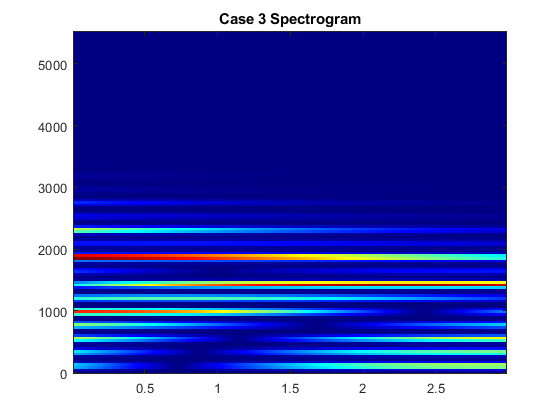
e) Plot the entire signal and compare it to the envelope A(t) generated by bellenv
%recalculating A(t) A_t3 = bellenv(tau3, dur3, fsamp3); %plot the signal figure(); plot(y3); set(gca,'FontSize',14); %set font size title('Case 3 Signal and A(t)','FontSize',14); %Title subtitle('Signal = blue line A(t) = red line'); xlabel('Time', 'FontSize',14);% X-axis Label ylabel('Amplitude', 'FontSize',14);% Y-axis Label drawnow; %ensure drawings are complete hold on; plot(A_t3, '-r', 'LineWidth', 2); hold off;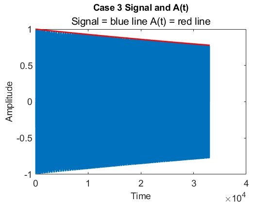
f) Plot about 100–200 samples from the middle of the signal and explain what you see, especially the frequency variation.
figure(); plot(y3(100:1:300)); title('Case 3 200 samples'); % This view of 200 samples shows a pattern with one spaced out peak followed % by three closely spaced peaks. This pattern shows that there are areas % where a lower frequency is predominant and other areas where higher % frequency aspects of the signal are showing up.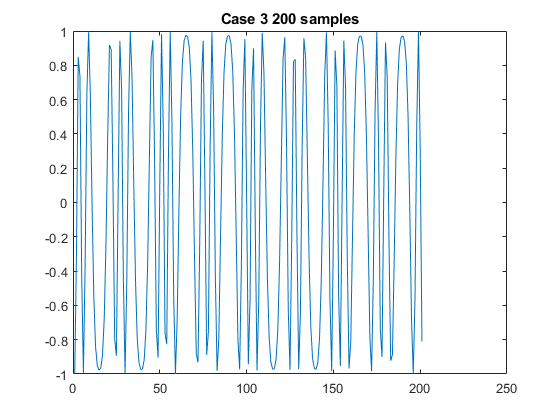
Case 4 - fc=110 Hz; fm=220 Hz; I0=10; tau=.3sec; dur=3sec; fs=11025;
a) Listen to sound by playing it with the soundsc function
%run bell function and create array of values % ff = frequency vector (containing fc and fm) ff4 = [110,220]; % Io = scale factor for modulation index Io4 = 10; % tau = decay parameter for A(t) and I(t) tau4 = .3; % dur = duration (in sec.) of the output signal dur4 = 3; % fsamp = sampling rate fsamp4 = 11025; y4 = bell(ff4,Io4,tau4,dur4,fsamp4); %play the sound (array and sampling rate) soundsc(y4, fsamp4);
b) Calculate the fundamental frequency of the "note" being played.
% The fundamental frequency is calculated by finding the fourier transform % or FFT of the bell sound and finding the frequency value with the first % promiment peak. Any peaks that occur above this frequency are simply % harmonics. % (https://www.mathworks.com/help/matlab/math/fourier-transforms.html) m4 = length(y4); n4 = pow2(nextpow2(m4)); y4fft = fft(y4, n4); f4 = (0:n4)*fsamp4/n4; power4 = abs(y4fft).^2/n4; %figure(); %plot(f4(1:floor(n4/2)),power4(1:floor(n4/2))); peaks4 = islocalmax(power4, 'MinProminence', .5); f04 = 0; for i = 1:length(peaks4) if(peaks4(i) == 1) f04 = i*fsamp4/n4; break; else continue; end end %%Explain how you can verify by listening that you have the correct fundamental frequency. % Just by listening, we can verify that we have the correct fundamental % frequency by varying the carrier and modulating function parameters to get higher % and lower toned sounds and see if our fundamental frequency calcuation is % also going up and down with the tone changes. We can also compare the sound of our created % note with the sound of the calculated natural freqeuncy using an online tone generator.
c) Describe how you can hear the frequency content changing according to I(t)
The frequency content is most modified by changing the Io value. Changing tau affects how quickly the sound decays within the duration and the duration obviously affects how long the sound plays in general. The interesting change is with Io where the lower the modulation index is the 'purer' the tone sounds. There are fewer reverberations and overtones/harmonics. The more we raise the Io value the more overtones and harmonics we hear.
%%Plot fi(t) versus t for comparison % fi(t) = fc - I(t)*fm*sin(2pi*fm*t+phi_m) + dI/dt*cos(2*pi*fm*t+phi_m) % (dI/dt = -1/tau * I0 * exp(-t/tau) %defining terms Psi_m4 = -pi/2; Psi_c4 = -pi/2; t4 = 0:1/fsamp4:dur4; I_t4 = Io4 * bellenv(tau4, dur4, fsamp4); %call bell envelope function (exponential decay) %calcualting fi_t fi_t4 = ff4(1,1) - I_t4.*ff4(1,2).*cos(2*pi*ff4(1,1)*t4+Io4*I_t4*-1/tau4.*cos(2*pi*ff4(1,2)*t4+Psi_m4)+Psi_c4); %All 6 cases will have their fi(t) plots plotted together on the same plot %(fig 2) for comparison sake %plotting normalized I(t) and fi(t) figure(2); subplot(3,2,4) plot(t4, fi_t4/max(fi_t4), '-b'); hold on; plot(t4, I_t4/max(I_t4), '-r'); hold off; title('Case 4 fi(t) vs. t');

d) Display a spectrogram of the signal
figure(); plotspec(y4, fsamp4, 256); title('Case 4 Spectrogram'); %%Describe how the frequency content changes, and how that change is related to I(t) % The frequency content changes with I(t) by showing how long the harmonics % and overtones last. We can see that the faster the decay rate or the % larger tau is the sooner the frequency spectrum begins to have a % diminshed influence from higher frequency aspects of the signal. Io also % affects the plot by adding in higher frequency spectral lines. The % higher the Io value the more harmonics or spectral lines we see on the graph. %%Point out the "harmonic" structure of the spectrogram, and calculate the fundamental frequency, f0 % The fundamental frequency has been calculated at this point and the % spectrogram shows that the fundamental frequency value is the one that % has the strongest presence in the spectrogram at the end of the duration % of the signal. The harmonic structure is seen with the spectral lines that % show how at the beginning of the noise a large number of frequencies % contribute to the sound but by the end of the sound we are left with the % fundamental frequency and maybe the first or second harmonic. %Case 4 fundamental frequency calculation result f04
f04 = 108.3389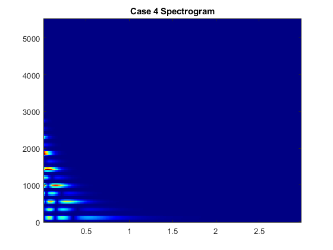
e) Plot the entire signal and compare it to the envelope A(t) generated by bellenv
%recalculating A(t) A_t4 = bellenv(tau4, dur4, fsamp4); %plot the signal figure(); plot(y4); set(gca,'FontSize',14); %set font size title('Case 4 Signal and A(t)','FontSize',14); %Title subtitle('Signal = blue line A(t) = red line'); xlabel('Time', 'FontSize',14);% X-axis Label ylabel('Amplitude', 'FontSize',14);% Y-axis Label drawnow; %ensure drawings are complete hold on; plot(A_t4, '-r', 'LineWidth', 2); hold off;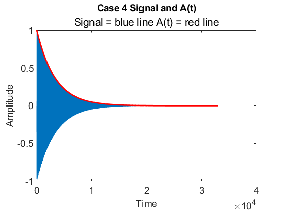
f) Plot about 100–200 samples from the middle of the signal and explain what you see, especially the frequency variation.
figure(); plot(y4(100:1:300)); title('Case 4 200 samples'); % This view of 200 samples shows a pattern with one spaced out peak followed % by three closely spaced peaks. This pattern shows that there are areas % where a lower frequency is predominant and other areas where higher % frequency aspects of the signal are showing up.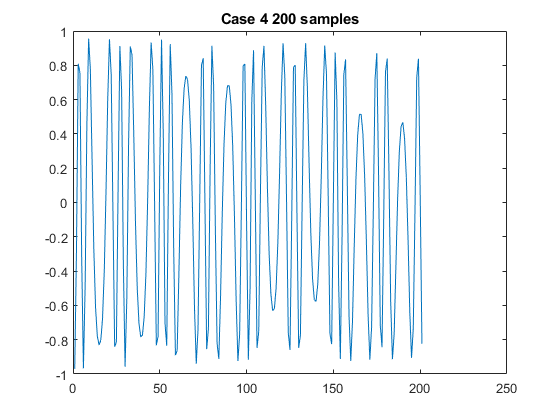
Case 5 - fc=250 Hz; fm=350 Hz; I0=5; tau=2sec; dur=5sec; fs=11025;
a) Listen to sound by playing it with the soundsc function
%run bell function and create array of values % ff = frequency vector (containing fc and fm) ff5 = [250,350]; % Io = scale factor for modulation index Io5 = 5; % tau = decay parameter for A(t) and I(t) tau5 = 2; % dur = duration (in sec.) of the output signal dur5 = 5; % fsamp = sampling rate fsamp5 = 11025; y5 = bell(ff5,Io5,tau5,dur5,fsamp5); %play the sound (array and sampling rate) soundsc(y5, fsamp5);
b) Calculate the fundamental frequency of the "note" being played.
% The fundamental frequency is calculated by finding the fourier transform % or FFT of the bell sound and finding the frequency value with the first % promiment peak. Any peaks that occur above this frequency are simply % harmonics. % (https://www.mathworks.com/help/matlab/math/fourier-transforms.html) m5 = length(y5); n5 = pow2(nextpow2(m5)); y5fft = fft(y5, n5); f5 = (0:n5)*fsamp5/n5; power5 = abs(y5fft).^2/n5; %figure(); %plot(f5(1:floor(n5/2)),power5(1:floor(n5/2))); peaks5 = islocalmax(power5, 'MinProminence', .5); f05 = 0; for i = 1:length(peaks5) if(peaks5(i) == 1) f05 = i*fsamp5/n5; break; else continue; end end %%Explain how you can verify by listening that you have the correct fundamental frequency. % Just by listening, we can verify that we have the correct fundamental % frequency by varying the carrier and modulating function parameters to get higher % and lower toned sounds and see if our fundamental frequency calcuation is % also going up and down with the tone changes. We can also compare the sound of our created % note with the sound of the calculated natural freqeuncy using an online tone generator.
c) Describe how you can hear the frequency content changing according to I(t)
The frequency content is most modified by changing the Io value. Changing tau affects how quickly the sound decays within the duration and the duration obviously affects how long the sound plays in general. The interesting change is with Io where the lower the modulation index is the 'purer' the tone sounds. There are fewer reverberations and overtones/harmonics. The more we raise the Io value the more overtones and harmonics we hear.
%%Plot fi(t) versus t for comparison % fi(t) = fc - I(t)*fm*sin(2pi*fm*t+phi_m) + dI/dt*cos(2*pi*fm*t+phi_m) % (dI/dt = -1/tau * I0 * exp(-t/tau) %defining terms Psi_m5 = -pi/2; Psi_c5 = -pi/2; t5 = 0:1/fsamp5:dur5; I_t5 = Io5 * bellenv(tau5, dur5, fsamp5); %call bell envelope function (exponential decay) %calcualting fi_t fi_t5 = ff5(1,1) - I_t5.*ff5(1,2).*cos(2*pi*ff5(1,1)*t5+Io5*I_t5*-1/tau5.*cos(2*pi*ff5(1,2)*t5+Psi_m5)+Psi_c5); %All 6 cases will have their fi(t) plots plotted together on the same plot %(fig 2) for comparison sake %plotting normalized I(t) and fi(t) figure(2); subplot(3,2,5) plot(t5, fi_t5/max(fi_t5), '-b'); hold on; plot(t5, I_t5/max(I_t5), '-r'); hold off; title('Case 5 fi(t) vs. t');
d) Display a spectrogram of the signal
figure(); plotspec(y5, fsamp5, 256); title('Case 5 Spectrogram'); %%Describe how the frequency content changes, and how that change is related to I(t) % The frequency content changes with I(t) by showing how long the harmonics % and overtones last. We can see that the faster the decay rate or the % larger tau is the sooner the frequency spectrum begins to have a % diminshed influence from higher frequency aspects of the signal. Io also % affects the plot by adding in higher frequency spectral lines. The % higher the Io value the more harmonics or spectral lines we see on the graph. %%Point out the "harmonic" structure of the spectrogram, and calculate the fundamental frequency, f0 % The fundamental frequency has been calculated at this point and the % spectrogram shows that the fundamental frequency value is the one that % has the strongest presence in the spectrogram at the end of the duration % of the signal. The harmonic structure is seen with the spectral lines that % show how at the beginning of the noise a large number of frequencies % contribute to the sound but by the end of the sound we are left with the % fundamental frequency and maybe the first or second harmonic. %Case 4 fundamental frequency calculation result f05
f05 = 100.0957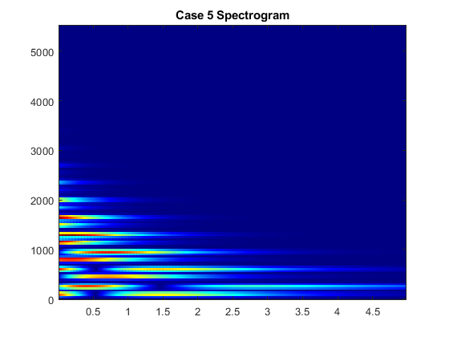
e) Plot the entire signal and compare it to the envelope A(t) generated by bellenv
%recalculating A(t) A_t5 = bellenv(tau5, dur5, fsamp5); %plot the signal figure(); plot(y5); set(gca,'FontSize',14); %set font size title('Case 5 Signal and A(t)','FontSize',14); %Title subtitle('Signal = blue line A(t) = red line'); xlabel('Time', 'FontSize',14);% X-axis Label ylabel('Amplitude', 'FontSize',14);% Y-axis Label drawnow; %ensure drawings are complete hold on; plot(A_t5, '-r', 'LineWidth', 2); hold off;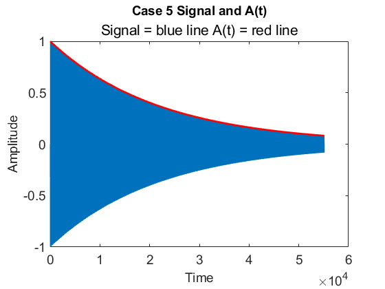
f) Plot about 100–200 samples from the middle of the signal and explain what you see, especially the frequency variation.
figure(); plot(y5(100:1:300)); title('Case 5 200 samples'); % This view of 200 samples doesn't show as much of a pattern. The principle % of frequency modulation can still be seen however, with the signal % changing amplitude with varying frequencies in the 200 sample window.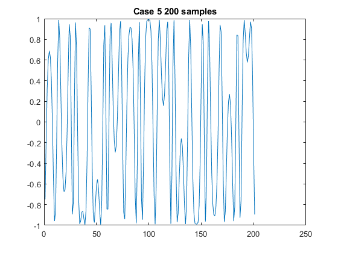
Case 6 - fc=250 Hz; fm=350 Hz; I0=3; tau=1sec; dur=5sec; fs=11025;
a) Listen to sound by playing it with the soundsc function
%run bell function and create array of values % ff = frequency vector (containing fc and fm) ff6 = [250,350]; % Io = scale factor for modulation index Io6 = 3; % tau = decay parameter for A(t) and I(t) tau6 = 1; % dur = duration (in sec.) of the output signal dur6 = 5; % fsamp = sampling rate fsamp6 = 11025; y6 = bell(ff6,Io6,tau6,dur6,fsamp6); %play the sound (array and sampling rate) soundsc(y6, fsamp6);
b) Calculate the fundamental frequency of the "note" being played.
% The fundamental frequency is calculated by finding the fourier transform % or FFT of the bell sound and finding the frequency value with the first % promiment peak. Any peaks that occur above this frequency are simply % harmonics. % (https://www.mathworks.com/help/matlab/math/fourier-transforms.html) m6 = length(y6); n6 = pow2(nextpow2(m6)); y6fft = fft(y6, n6); f6 = (0:n6)*fsamp6/n6; power6 = abs(y6fft).^2/n6; %figure(); %plot(f6(1:floor(n6/2)),power6(1:floor(n6/2))); peaks6 = islocalmax(power6, 'MinProminence', .5); f06 = 0; for i = 1:length(peaks6) if(peaks6(i) == 1) f06 = i*fsamp6/n6; break; else continue; end end %%Explain how you can verify by listening that you have the correct fundamental frequency. % Just by listening, we can verify that we have the correct fundamental % frequency by varying the carrier and modulating function parameters to get higher % and lower toned sounds and see if our fundamental frequency calcuation is % also going up and down with the tone changes. We can also compare the sound of our created % note with the sound of the calculated natural freqeuncy using an online tone generator.
c) Describe how you can hear the frequency content changing according to I(t)
The frequency content is most modified by changing the Io value. Changing tau affects how quickly the sound decays within the duration and the duration obviously affects how long the sound plays in general. The interesting change is with Io where the lower the modulation index is the 'purer' the tone sounds. There are fewer reverberations and overtones/harmonics. The more we raise the Io value the more overtones and harmonics we hear.
%%Plot fi(t) versus t for comparison % fi(t) = fc - I(t)*fm*sin(2pi*fm*t+phi_m) + dI/dt*cos(2*pi*fm*t+phi_m) % (dI/dt = -1/tau * I0 * exp(-t/tau) %defining terms Psi_m6 = -pi/2; Psi_c6 = -pi/2; t6 = 0:1/fsamp6:dur6; I_t6 = Io6 * bellenv(tau6, dur6, fsamp6); %call bell envelope function (exponential decay) %calcualting fi_t fi_t6 = ff6(1,1) - I_t6.*ff6(1,2).*cos(2*pi*ff6(1,1)*t6+Io6*I_t6*-1/tau6.*cos(2*pi*ff6(1,2)*t6+Psi_m6)+Psi_c6); %All 6 cases will have their fi(t) plots plotted together on the same plot %(fig 2) for comparison sake %plotting normalized I(t) and fi(t) figure(2); subplot(3,2,6) plot(t6, fi_t6/max(fi_t6), '-b'); hold on; plot(t6, I_t6/max(I_t6), '-r'); hold off; title('Case 6 fi(t) vs. t');
d) Display a spectrogram of the signal
figure(); plotspec(y6, fsamp6, 256); title('Case 6 Spectrogram'); %%Describe how the frequency content changes, and how that change is related to I(t) % The frequency content changes with I(t) by showing how long the harmonics % and overtones last. We can see that the faster the decay rate or the % larger tau is the sooner the frequency spectrum begins to have a % diminshed influence from higher frequency aspects of the signal. Io also % affects the plot by adding in higher frequency spectral lines. The % higher the Io value the more harmonics or spectral lines we see on the % graph. %%Point out the "harmonic" structure of the spectrogram, and calculate the fundamental frequency, f0 % The fundamental frequency has been calculated at this point and the % spectrogram shows that the fundamental frequency value is the one that % has the strongest presence in the spectrogram at the end of the duration % of the signal. The harmonic structure is seen with the spectral lines that % show how at the beginning of the noise a large number of frequencies % contribute to the sound but by the end of the sound we are left with the % fundamental frequency and maybe the first or second harmonic. %Case 6 fundamental frequency calculation result f06
f06 = 100.0957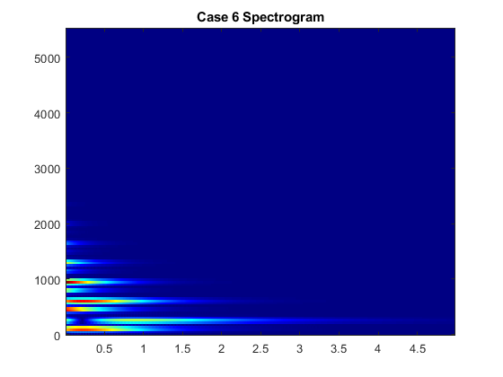
e) Plot the entire signal and compare it to the envelope A(t) generated by bellenv
%recalculating A(t) A_t6 = bellenv(tau6, dur6, fsamp6); %plot the signal figure(); plot(y6); set(gca,'FontSize',14); %set font size title('Case 6 Signal and A(t)','FontSize',14); %Title subtitle('Signal = blue line A(t) = red line'); xlabel('Time', 'FontSize',14);% X-axis Label ylabel('Amplitude', 'FontSize',14);% Y-axis Label drawnow; %ensure drawings are complete hold on; plot(A_t6, '-r', 'LineWidth', 2); hold off;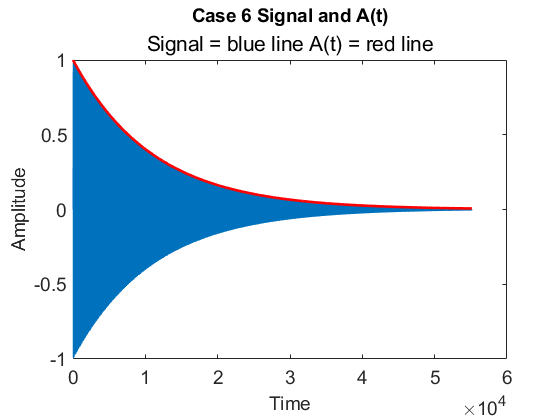
f) Plot about 100–200 samples from the middle of the signal and explain what you see, especially the frequency variation.
figure(); plot(y6(100:1:300)); title('Case 6 200 samples'); % This view of 200 samples doesn't show as much of a pattern. The principle % of frequency modulation can still be seen however, with the signal % changing amplitude with varying frequencies in the 200 sample window.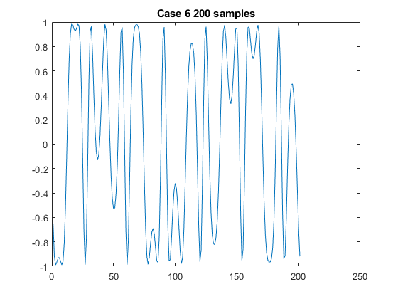
4.4 Modifying the Fundamental Frequency
Test 1: Fc = 50 and Fm = 100 => F0 ~ 50
ff = frequency vector (containing fc and fm)
ff1 = [50,100]; % Io = scale factor for modulation index Io1 = 10; % tau = decay parameter for A(t) and I(t) tau1 = 2; % dur = duration (in sec.) of the output signal dur1 = 6; % fsamp = sampling rate fsamp1 = 11025; y1 = bell(ff1,Io1,tau1,dur1,fsamp1); %play the sound (array and sampling rate) soundsc(y1, fsamp1); %%Describe what you hear: % In this test the pitch was very low and the sound seemed to decay or end % realtively quick.
Test 2: fc = 200 fm = 400 => F0 ~ 200
ff = frequency vector (containing fc and fm)
ff2 = [200,400]; % Io = scale factor for modulation index Io2 = 10; % tau = decay parameter for A(t) and I(t) tau2 = 2; % dur = duration (in sec.) of the output signal dur2 = 6; % fsamp = sampling rate fsamp2 = 11025; y2 = bell(ff2,Io2,tau2,dur2,fsamp2); %play the sound (array and sampling rate) soundsc(y2, fsamp2); %%Describe what you hear: % In this test the pitch was was at a comfortable level and the sound seemed % to decay relatively slow.
Test 3: fc = 400 fm = 800 => F0 ~ 400
ff = frequency vector (containing fc and fm)
ff3 = [400,800]; % Io = scale factor for modulation index Io3 = 10; % tau = decay parameter for A(t) and I(t) tau3 = 2; % dur = duration (in sec.) of the output signal dur3 = 6; % fsamp = sampling rate fsamp3 = 11025; y3 = bell(ff3,Io3,tau3,dur3,fsamp3); %play the sound (array and sampling rate) soundsc(y3, fsamp3);
Test 4: fc = 800 fm = 1600 => F0 ~ 800
ff = frequency vector (containing fc and fm)
ff4 = [800,1600]; % Io = scale factor for modulation index Io4 = 10; % tau = decay parameter for A(t) and I(t) tau4 = 2; % dur = duration (in sec.) of the output signal dur4 = 6; % fsamp = sampling rate fsamp4 = 11025; y4 = bell(ff4,Io4,tau4,dur4,fsamp4); %play the sound (array and sampling rate) soundsc(y4, fsamp4); %%Describe what you hear: % In this test the pitch was was at a very high level and the overtones % were not very pleasant to listen to. The harmonics or overtones decayed % quickly but the fundamental frequency seemed to decay at a slower rate.
Frequency Modulation Ratio Tests
Test 1: 5:7 Ratio (f0 = 40)
ff = frequency vector (containing fc and fm)
ff5 = [200, 280]; % Io = scale factor for modulation index Io5 = 10; % tau = decay parameter for A(t) and I(t) tau5 = 2; % dur = duration (in sec.) of the output signal dur5 = 6; % fsamp = sampling rate fsamp5 = 11025; y5 = bell(ff5,Io5,tau5,dur5,fsamp5); %play the sound (array and sampling rate) soundsc(y5, fsamp5);
Test 2: 7:5 Ratio (f0 = 40)
ff = frequency vector (containing fc and fm)
ff6 = [280,200]; % Io = scale factor for modulation index Io6 = 10; % tau = decay parameter for A(t) and I(t) tau6 = 2; % dur = duration (in sec.) of the output signal dur6 = 6; % fsamp = sampling rate fsamp6 = 11025; y6 = bell(ff6,Io6,tau6,dur6,fsamp6); %play the sound (array and sampling rate) soundsc(y6, fsamp6);
Test 3: 1:6
ff = frequency vector (containing fc and fm)
ff7 = [110,610]; % Io = scale factor for modulation index Io7 = 10; % tau = decay parameter for A(t) and I(t) tau7 = 2; % dur = duration (in sec.) of the output signal dur7 = 6; % fsamp = sampling rate fsamp7 = 11025; y7 = bell(ff7,Io7,tau7,dur7,fsamp7); %play the sound (array and sampling rate) soundsc(y7, fsamp7);
Test 4: 7:11 Ratio
ff = frequency vector (containing fc and fm)
ff8 = [700,1100]; % Io = scale factor for modulation index Io8 = 10; % tau = decay parameter for A(t) and I(t) tau8 = 2; % dur = duration (in sec.) of the output signal dur8 = 6; % fsamp = sampling rate fsamp8 = 11025; y8 = bell(ff8,Io8,tau8,dur8,fsamp8); %play the sound (array and sampling rate) soundsc(y8, fsamp8);
Which parameters sound best?
% I think that the 5:7 or 1:2 ratios sound the best. With ratios that have % the carrier frequency greater than the modulating frequency the sound % seems clunky and like it interferes with itself. The 7:11 ratio had so % many tones in it that it was hard to listen to.